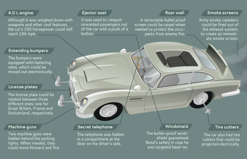

Fri, 03 Dec 2010 04:20:00 · infographic · 007 · design · cars · JamesBond · Bond · Film
Infographic: A History of James Bond Cars

Even though I’m not a big fan of Mr. Bond a.k.a. 007, I have to admit that this bloke has been driving series of pretty* cool cars! Drives here to see some more sexy cars that only a distinguished gentleman-spy would drive.
* Jealousy of his cool gadget limits my love for Bond…